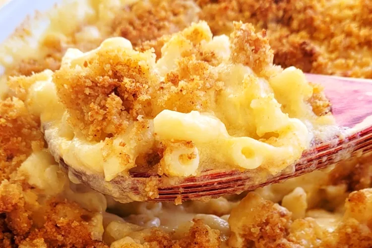

Mac and Cheese

Description
This classic baked mac and cheese recipe with a buttered bread crumb topping is creamy and comforting. It's easy to make the cheese sauce from scratch on your stovetop, starting with a roux and adding milk, Cheddar, and Parmesan, resulting in a rich, decadent sauce that coats every nook and cranny of the noodles. Serve this comfort-food macaroni and cheese casserole with grilled meats, sloppy Joes, fried chicken or alongside a salad for a meatless dinner.
Ingredients:
- Macaroni: This homemade mac and cheese starts with a box of uncooked macaroni noodles.
- Butterand flour:You'll need butter and flour to make a roux for the cheese sauce. You'll also need two tablespoons of butter for the topping.
- Milk:Use whole milk for the richest flavor and texture.
- Cheese:This baked mac and cheese recipe calls for Cheddar and Parmesan cheeses.
- Seasonings:Salt and pepper goes into the sauce, while paprika is sprinkled over the topping.
- Bread crumbs:Use store-bought dried bread crumbs or make your own at home.